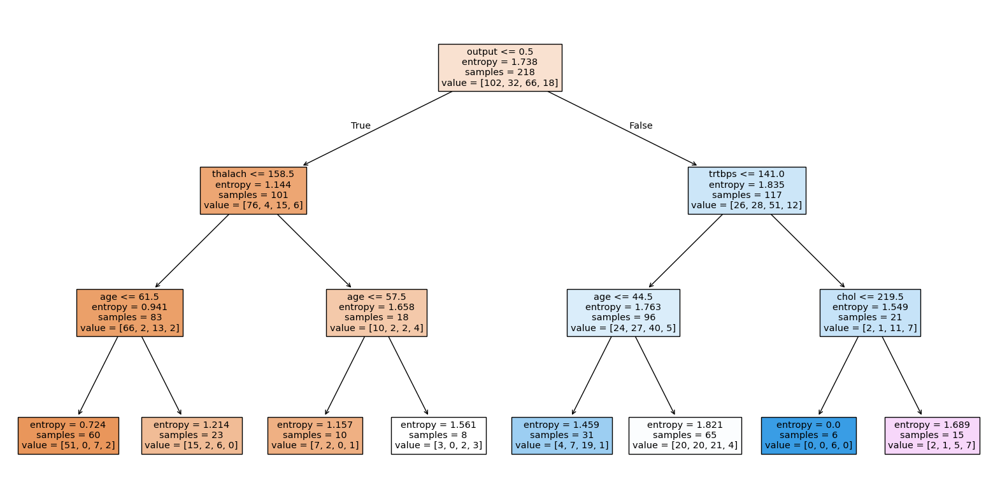

## library imports here
import pandas as pd
import numpy as np
import pandas as pd
from sklearn.model_selection import train_test_split
from sklearn.compose import ColumnTransformer
from sklearn.preprocessing import StandardScaler, OneHotEncoder
from sklearn.model_selection import GridSearchCV
from sklearn.pipeline import Pipeline
from sklearn.neighbors import KNeighborsClassifier
from sklearn.linear_model import LogisticRegression
from sklearn.discriminant_analysis import LinearDiscriminantAnalysis, QuadraticDiscriminantAnalysis
from sklearn.svm import SVC
from sklearn.metrics import accuracy_score, confusion_matrix, classification_report
from plotnine import *Our dataset consists of clinical data from patients who entered the hospital complaining of chest pain (“angina”) during exercise. The information collected includes:
age: Age of the patientsex: Sex of the patientcp: Chest Pain type- Value 0: asymptomatic
- Value 1: typical angina
- Value 2: atypical angina
- Value 3: non-anginal pain
trtbps: resting blood pressure (in mm Hg)chol: cholesterol in mg/dl fetched via BMI sensorrestecg: resting electrocardiographic results- Value 0: normal
- Value 1: having ST-T wave abnormality (T wave inversions and/or ST elevation or depression of > 0.05 mV)
- Value 2: showing probable or definite left ventricular hypertrophy by Estes’ criteria
thalach: maximum heart rate achieved during exerciseoutput: the doctor’s diagnosis of whether the patient is at risk for a heart attack- 0 = not at risk of heart attack
- 1 = at risk of heart attack
ha = pd.read_csv("https://www.dropbox.com/s/aohbr6yb9ifmc8w/heart_attack.csv?dl=1")Q1: Natural Multiclass Models
Fit a multiclass KNN, Decision Tree, and LDA for the heart disease data; this time predicting the type of chest pain (categories 0 - 3) that a patient experiences. For the decision tree, plot the fitted tree, and interpret the first couple splits.
# kNN
y = ha['cp']
X = ha.drop(columns=['cp'])
Xt, Xv, yt, yv = train_test_split(X, y, test_size=0.2, random_state=42)
knn = Pipeline([
('scaling', StandardScaler()),
('knn', KNeighborsClassifier(n_neighbors=5))
])
grid = {
'knn__n_neighbors': [3,5,7,9,11],
'knn__weights': ['uniform', 'distance']
}
grid_knn = GridSearchCV(knn, grid, cv=5, scoring='accuracy')
grid_knn.fit(Xt, yt)
print(grid_knn.best_params_)
knn_pred = grid_knn.predict(Xv)
print('knn accuracy', accuracy_score(yv, knn_pred))
print('classification report', classification_report(yv, knn_pred)){'knn__n_neighbors': 7, 'knn__weights': 'uniform'}
knn accuracy 0.509090909090909
classification report precision recall f1-score support
0 0.57 0.88 0.70 26
1 0.50 0.17 0.25 12
2 0.33 0.20 0.25 15
3 0.00 0.00 0.00 2
accuracy 0.51 55
macro avg 0.35 0.31 0.30 55
weighted avg 0.47 0.51 0.45 55
# Decision Tree
from sklearn.tree import DecisionTreeClassifier
tree = DecisionTreeClassifier(random_state = 42)
tree_grid = {
'max_depth': [3,5,7,9,11],
'min_samples_split': [2,3,4],
'criterion': ['gini', 'entropy']
}
grid_tree = GridSearchCV(tree, tree_grid, cv=5, scoring='accuracy')
grid_tree.fit(Xt, yt)
y_pred = grid_tree.predict(Xv)
print('tree accuracy', accuracy_score(yv, y_pred))
print('classification report', classification_report(yv, y_pred))tree accuracy 0.5454545454545454
classification report precision recall f1-score support
0 0.69 0.69 0.69 26
1 0.00 0.00 0.00 12
2 0.46 0.73 0.56 15
3 0.20 0.50 0.29 2
accuracy 0.55 55
macro avg 0.34 0.48 0.39 55
weighted avg 0.46 0.55 0.49 55
/usr/local/lib/python3.12/dist-packages/sklearn/metrics/_classification.py:1565: UndefinedMetricWarning: Precision is ill-defined and being set to 0.0 in labels with no predicted samples. Use `zero_division` parameter to control this behavior.
/usr/local/lib/python3.12/dist-packages/sklearn/metrics/_classification.py:1565: UndefinedMetricWarning: Precision is ill-defined and being set to 0.0 in labels with no predicted samples. Use `zero_division` parameter to control this behavior.
/usr/local/lib/python3.12/dist-packages/sklearn/metrics/_classification.py:1565: UndefinedMetricWarning: Precision is ill-defined and being set to 0.0 in labels with no predicted samples. Use `zero_division` parameter to control this behavior.from sklearn.tree import plot_tree
import matplotlib.pyplot as plt
plt.figure(figsize=(20,10))
plot_tree(grid_tree.best_estimator_, feature_names=X.columns.tolist(), filled=True)
plt.show()
# LDA
from sklearn.discriminant_analysis import LinearDiscriminantAnalysis
lda_pipe = Pipeline([
('scaling', StandardScaler()),
('lda', LinearDiscriminantAnalysis())
])
grid_lda = GridSearchCV(lda_pipe, {}, cv=5)
grid_lda.fit(Xt, yt)
lda_pred = grid_lda.predict(Xv)
print('lda accuracy', accuracy_score(yv, lda_pred))
print('classification report', classification_report(yv, lda_pred))lda accuracy 0.5454545454545454
classification report precision recall f1-score support
0 0.69 0.77 0.73 26
1 0.00 0.00 0.00 12
2 0.42 0.67 0.51 15
3 0.00 0.00 0.00 2
accuracy 0.55 55
macro avg 0.28 0.36 0.31 55
weighted avg 0.44 0.55 0.48 55
/usr/local/lib/python3.12/dist-packages/sklearn/metrics/_classification.py:1565: UndefinedMetricWarning: Precision is ill-defined and being set to 0.0 in labels with no predicted samples. Use `zero_division` parameter to control this behavior.
/usr/local/lib/python3.12/dist-packages/sklearn/metrics/_classification.py:1565: UndefinedMetricWarning: Precision is ill-defined and being set to 0.0 in labels with no predicted samples. Use `zero_division` parameter to control this behavior.
/usr/local/lib/python3.12/dist-packages/sklearn/metrics/_classification.py:1565: UndefinedMetricWarning: Precision is ill-defined and being set to 0.0 in labels with no predicted samples. Use `zero_division` parameter to control this behavior.Q2: OvR
Create a new column in the ha dataset called cp_is_3, which is equal to 1 if the cp variable is equal to 3 and 0 otherwise.
Then, fit a Logistic Regression to predict this new target, and report the F1 Score.
Repeat for the other three cp categories. Which category was the OvR approach best at distinguishing?
ha["cp_is_3"] = (ha["cp"] == 3) * 1
ha["cp_is_2"] = (ha["cp"] == 2) * 1
ha["cp_is_1"] = (ha["cp"] == 1) * 1
ha["cp_is_0"] = (ha["cp"] == 0) * 1from sklearn.model_selection import train_test_split
from sklearn.preprocessing import StandardScaler
from sklearn.pipeline import Pipeline
from sklearn.linear_model import LogisticRegression
from sklearn.metrics import f1_score
import pandas as pd
X = ha[['age', 'sex', 'trtbps', 'chol', 'thalach']]
y = ha['cp_is_3']
logit = Pipeline([
('scaler', StandardScaler()),
('logreg', LogisticRegression(max_iter=2000))
])
logit.fit(X, y)
y_pred = logit.predict(X)
f1_3 = f1_score(y, y_pred)
print('f1 score for cp:', f1_3)f1 score for cp: 0.0X = ha[['age', 'sex', 'trtbps', 'chol', 'thalach']]
y = ha['cp_is_2']
logit = Pipeline([
('scaler', StandardScaler()),
('logreg', LogisticRegression(max_iter=2000))
])
logit.fit(X, y)
y_pred = logit.predict(X)
f1_3 = f1_score(y, y_pred)
print('f1 score for cp:', f1_3)f1 score for cp: 0.10869565217391304X = ha[['age', 'sex', 'trtbps', 'chol', 'thalach']]
y = ha['cp_is_1']
logit = Pipeline([
('scaler', StandardScaler()),
('logreg', LogisticRegression(max_iter=2000))
])
logit.fit(X, y)
y_pred = logit.predict(X)
f1_3 = f1_score(y, y_pred)
print('f1 score for cp:', f1_3)f1 score for cp: 0.0X = ha[['age', 'sex', 'trtbps', 'chol', 'thalach']]
y = ha['cp_is_0']
logit = Pipeline([
('scaler', StandardScaler()),
('logreg', LogisticRegression(max_iter=2000))
])
logit.fit(X, y)
y_pred = logit.predict(X)
f1_3 = f1_score(y, y_pred)
print('f1 score for cp:', f1_3)f1 score for cp: 0.625The OvR method performed best for chest pain type 0, meaning that this type is the most seaparable from the other using the clinical predictors.
Q3: OvO
Reduce your dataset to only the 0 and 1 types of chest pain.
Then, fit a Logistic Regression to predict between the two groups, and report the ROC-AUC.
Repeat comparing category 0 to 2 and 3. Which pair was the OvO approach best at distinguishing?
from sklearn.model_selection import cross_val_score
ha0_1 = ha[(ha['cp'] == 0) | (ha['cp'] == 1)]
X = ha0_1[['age', 'sex', 'trtbps', 'chol', 'thalach']]
y = ha0_1['cp']
logit = Pipeline([
('scaler', StandardScaler()),
('logreg', LogisticRegression(max_iter=2000))
])
logit.fit(X, y)
y_pred = logit.predict(X)
cross_val_score(logit, X, y, cv=5, scoring="roc_auc").mean()np.float64(0.7599487179487181)ha0_2 = ha[(ha['cp'] == 0) | (ha['cp'] == 2)]
X = ha0_2[['age', 'sex', 'trtbps', 'chol', 'thalach']]
y = ha0_2['cp']
logit = Pipeline([
('scaler', StandardScaler()),
('logreg', LogisticRegression(max_iter=2000))
])
logit.fit(X, y)
y_pred = logit.predict(X)
cross_val_score(logit, X, y, cv=5, scoring="roc_auc").mean()np.float64(0.6671470588235293)ha0_3 = ha[(ha['cp'] == 0) | (ha['cp'] == 3)]
X = ha0_3[['age', 'sex', 'trtbps', 'chol', 'thalach']]
y = ha0_3['cp']
logit = Pipeline([
('scaler', StandardScaler()),
('logreg', LogisticRegression(max_iter=2000))
])
logit.fit(X, y)
y_pred = logit.predict(X)
cross_val_score(logit, X, y, cv=5, scoring="roc_auc").mean()np.float64(0.708923076923077)The pair that the OvO was best at distinguishing was between asymptomatic and low chest pain.